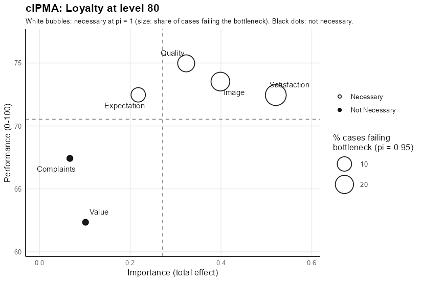
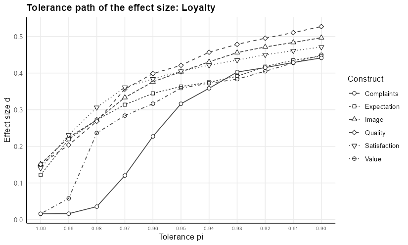

The cIPMA package carries out the combined importance-performance map analysis of Hauff et al. (2024), https://doi.org/10.1016/j.jretconser.2024.103723. The analysis places each predictor of a target construct on a map of importance, the total effect in a PLS-SEM model estimated with seminr, against performance, the mean of the latent variable scores rescaled to 0-100. Quantile Necessary Condition Analysis (QNCA), computed with the qnca package, adds the necessity of each predictor and the bottleneck: the level of the predictor required for a target level of the outcome.
Necessity is decided at the strict limit pi = 1, where the QNCA frontier equals the CE-FDH ceiling of Necessary Condition Analysis (Dul 2016). A predictor is necessary when its CE-FDH effect size reaches 0.10 and its permutation p-value stays below 0.05. The tolerance pi sets the share 1 - pi of the cases attaining the target level that may sit below the reported requirement, so a bottleneck at pi = 0.95 rests on the 5% quantile of the predictor among the successful cases. The tolerance path repeats the effect size and the bottleneck from pi = 1.00 to pi = 0.90 in steps of 0.01.
The guide to the package is at https://marekdejauj.github.io/cIPMA/.
Installation
The release installs from CRAN:
install.packages("cIPMA")The development version installs from GitHub, together with the qnca package from the r folder of its repository:
remotes::install_github("MarekDejaUJ/cIPMA")Example
The example uses the mobi data of seminr: 250 customers of a mobile phone provider, with indicators on a 1-10 scale, in the European customer satisfaction index model. The target is loyalty at level 80 of 100, and the bottleneck uses the tolerance pi = 0.95.
library(cIPMA)
library(seminr)
mm <- constructs(
composite("Image", multi_items("IMAG", 1:5)),
composite("Expectation", multi_items("CUEX", 1:3)),
composite("Quality", multi_items("PERQ", 1:7)),
composite("Value", multi_items("PERV", 1:2)),
composite("Satisfaction", multi_items("CUSA", 1:3)),
composite("Complaints", single_item("CUSCO")),
composite("Loyalty", multi_items("CUSL", 1:3))
)
sm <- relationships(
paths(from = "Image", to = c("Expectation", "Satisfaction", "Loyalty")),
paths(from = "Expectation", to = c("Quality", "Value", "Satisfaction")),
paths(from = "Quality", to = c("Value", "Satisfaction")),
paths(from = "Value", to = "Satisfaction"),
paths(from = "Satisfaction", to = c("Complaints", "Loyalty")),
paths(from = "Complaints", to = "Loyalty")
)
pls <- estimate_pls(mobi, mm, sm)
boot <- bootstrap_model(pls, nboot = 1000, cores = 1, seed = 123)
scales <- setNames(rep(list(c(1, 10)), ncol(mobi)), names(mobi))
res <- cipma(boot, "Loyalty", mobi, scales, target_level = 80, pi = 0.95,
seed = 1, pls_model = pls)
rescIPMA: target Loyalty at level 80 (n = 250, tolerance pi = 0.95)
Construct Importance Performance d p Necessary Required Failing
Image 0.399 73.5 0.151 0.0045 yes 63.566 21.6%
Expectation 0.218 72.5 0.122 0.0155 yes 56.419 10.0%
Quality 0.323 75.0 0.151 0.0045 yes 62.839 16.4%
Value 0.101 62.3 0.016 0.5550 no 44.444 14.8%
Satisfaction 0.521 72.5 0.140 0.0005 yes 67.209 29.2%
Complaints 0.067 67.4 0.016 0.3755 no 44.444 10.8%
Necessary: CE-FDH d >= 0.10 and p < 0.05 at pi = 1.00. Required and Failing:
bottleneck at pi = 0.95 (NN: no requirement; NA: level not attained).
summary(x) adds the readings; summary(x, detail = "full") adds the tolerance path and
the bottleneck table; cipma_diagnostics(x) runs the QNCA diagnostics.The columns d, p and Necessary give the decision at the strict limit. Required gives the level of each predictor required for loyalty of at least 80 at pi = 0.95, and Failing gives the share of customers below the required level. The required levels carry three decimals, as in the bottleneck table of NCA, and the failing shares at pi = 1 equal the percentile bottleneck table of NCA, the source of the failing shares in Hauff et al. (2024). Value and complaints carry no necessity, and the map draws both as black dots.
plot(res)
plot(res, scale = "full") draws the same map with performance on the whole 0-100 scale and importance from 0.
Tolerance path
summary(res, detail = "full") adds the effect size and the required level at every tolerance from 1.00 to 0.90. The effect size of image grows from 0.151 at pi = 1.00 to 0.497 at pi = 0.90, because the frontier rises once the tolerance admits the most efficient customers below the requirement.
plot(res, type = "path")
Effect sizes at pi < 1 are relative to the tolerance. The NCA landmark of 0.10 applies to the CE-FDH effect size at pi = 1, which is the reason the decision on necessity stays at the strict limit.
Output
| Call | Result |
|---|---|
res |
combined table with the decision at the strict limit and the bottleneck at the chosen tolerance |
summary(res, detail = "brief") |
combined table with the settings |
summary(res) |
adds the PLS-SEM p-values, the effect size and p-value at the chosen tolerance and one reading per predictor |
summary(res, detail = "full") |
adds the tolerance path of the effect size and of the required level and the bottleneck table across outcome levels |
cipma_diagnostics(res) |
reference band, deletion screen, resolution table and consistency probe of QNCA for every predictor |
cipma_report(res, file = "report.md", diagnostics = dg) |
full report in Markdown |
plot(res, type = "map", scale = "zoom") |
combined map; scale = "full" for the 0-100 scale |
plot(res, type = "path"), plot(res, type = "bottleneck")
|
tolerance paths of the effect size and of the required level |
check_assumptions(res) |
reliability, discriminant validity (heterotrait-monotrait ratio) and collinearity (variance inflation factor) |
Diagnostics
dg <- cipma_diagnostics(res, seed = 1)
dgQNCA diagnostics of the cIPMA predictors of Loyalty (tolerances 1.00, 0.95, 0.90)
Reference band (199 benchmark datasets): observed d, upper band limit, excess
Construct pi d_obs upper excess p_null Above_band
Image 1.00 0.152 0.271 -0.118 0.780 no
Image 0.95 0.404 0.466 -0.062 0.730 no
Image 0.90 0.496 0.517 -0.021 0.460 no
Expectation 1.00 0.123 0.225 -0.102 0.630 no
Expectation 0.95 0.363 0.419 -0.056 0.850 no
Expectation 0.90 0.446 0.473 -0.027 0.495 no
Quality 1.00 0.152 0.286 -0.134 0.840 no
Quality 0.95 0.420 0.487 -0.066 0.720 no
Quality 0.90 0.526 0.557 -0.030 0.405 no
Value 1.00 0.014 0.200 -0.187 1.000 no
Value 0.95 0.358 0.418 -0.060 0.830 no
Value 0.90 0.443 0.489 -0.047 0.640 no
Satisfaction 1.00 0.141 0.258 -0.117 0.780 no
Satisfaction 0.95 0.402 0.428 -0.026 0.315 no
Satisfaction 0.90 0.471 0.494 -0.023 0.290 no
Complaints 1.00 0.014 0.109 -0.095 0.965 no
Complaints 0.95 0.316 0.406 -0.090 0.405 no
Complaints 0.90 0.440 0.497 -0.057 0.575 no
Deletion screen (k = 1): most influential deletion and its relative change of d per tolerance
Construct Cases Relative_change Flagged_rows
Image 28 0.191 / 0.044 / 0.007 17
Expectation 117 0.302 / 0.010 / 0.006 5
Quality 133 0.258 / 0.057 / 0.012 18
Value 242 2.403 / 0.016 / 0.028 56
Satisfaction 188 0.194 / 0.009 / 0.008 6
Complaints 109 0.000 / 0.036 / 0.010 26
Resolution at pi = 0.95 for outcome targets up to 80
Construct Targets Inherited Smallest_resistance Smallest_attaining_set
Image 40 6 5 104
Expectation 40 11 5 104
Quality 40 10 5 104
Value 40 8 5 104
Satisfaction 40 2 5 104
Complaints 40 3 5 104
Consistency probe: divergence of the drift slopes and the slopes at the two tolerances
Construct Divergence Drift
Image 10.008 10.26297 / 0.25493
Expectation 8.591 9.20613 / 0.61513
Quality 6.953 7.89470 / -0.94169
Value 10.615 11.37308 / 0.75806
Satisfaction 10.156 10.55362 / 0.39722
Complaints 6.167 6.80132 / -0.63434
An empty zone above the band exceeds the dependence-matched benchmark; the band is a
proposed diagnostic with operating characteristics still to be established.The reference band compares the observed effect size with a Gaussian-copula benchmark that keeps the marginals and the rank dependence of each pair and imposes no attainability floor. An effect size above the upper limit of the band exceeds the benchmark. The band is a proposed diagnostic with operating characteristics still to be established, and the guide describes every diagnostic.
Technology acceptance data
The combined importance-performance map analysis of Hauff et al. (2024) uses the survey of French adopters of e-book readers of Richter, Hauff, Kolev and Schubring (2023), Data in Brief 48, 109190, https://doi.org/10.1016/j.dib.2023.109190. The data are on Mendeley Data under the CC BY 4.0 licence, https://doi.org/10.17632/pd5dp3phx2.4, and read.csv() reads the file from there:
tam <- read.csv(
"https://data.mendeley.com/public-files/datasets/pd5dp3phx2/files/47b2cc21-ccde-48a1-a2af-9bcdad4e0e2f/file_downloaded",
fileEncoding = "UTF-8-BOM", check.names = FALSE
)
tam_mm <- constructs(
composite("Perceived_Usefulness", multi_items("PU_0", 1:3)),
composite("Compatibility", multi_items("CO_0", 1:3)),
composite("Ease_of_Use", multi_items("EOU_0", 1:3)),
composite("Emotional_Value", multi_items("EMV_0", 1:3)),
composite("Adoption_Intention", multi_items("AD_0", 1:3)),
composite("Technology_Use", single_item("USE_01"))
)
tam_sm <- relationships(
paths(from = c("Compatibility", "Perceived_Usefulness", "Ease_of_Use", "Emotional_Value"),
to = "Adoption_Intention"),
paths(from = c("Adoption_Intention", "Compatibility", "Perceived_Usefulness",
"Ease_of_Use", "Emotional_Value"),
to = "Technology_Use")
)
tam_pls <- estimate_pls(tam, tam_mm, tam_sm)
tam_boot <- bootstrap_model(tam_pls, nboot = 1000, cores = 1, seed = 1)
tam_scales <- c(setNames(rep(list(c(1, 5)), 15), grep("^(PU|CO|EOU|EMV|AD)_0", names(tam), value = TRUE)),
list(USE_01 = c(1, 7)))
tam_res <- cipma(tam_boot, "Technology_Use", tam, tam_scales, target_level = 85,
seed = 1, pls_model = tam_pls)
summary(tam_res, detail = "full")Structure learning
discovery_cipma() learns the structural model from the data with the bnlearn package and runs the combined analysis on the learned model. Structure learning finds statistical associations, and the learned paths need theoretical justification and replication before an interpretation as causal relations. The function is experimental.
Citation
citation("cIPMA") gives the references:
- Deja, M. (2026). cIPMA: Combined Importance-Performance Map Analysis, R package version 0.2.0. https://doi.org/10.5281/zenodo.18656578.
- Hauff, S., Richter, N. F., Sarstedt, M., & Ringle, C. M. (2024). Importance and performance in PLS-SEM and NCA: Introducing the combined importance-performance map analysis (cIPMA). Journal of Retailing and Consumer Services, 78, 103723. https://doi.org/10.1016/j.jretconser.2024.103723.
- Deja, M. (2026). Quantile Necessary Condition Analysis: A Tolerance-Parameterized Generalization of Necessary Condition Analysis. Quality & Quantity (accepted for publication).
- Dul, J. (2016). Necessary Condition Analysis (NCA): Logic and methodology of “necessary but not sufficient” causality. Organizational Research Methods, 19(1), 10-52. https://doi.org/10.1177/1094428115584005.